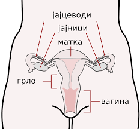

Za čovjeka, kao i za ostala živa bića, stvaranje potomstva veoma je značajno. To omogućava produžetak vrste i kontinuitet života. Polni organi čovjeka sastoje se od unutrašnjih i spoljašnjih djelova. Oni se oblikuju prije rođenja, još dok smo u majčinom tijelu, a u doba puberteta potpuno se razvijaju i postaju sposobni za razmnožavanje.
Ženski polni organi
Ženski polni organi dijele se na spoljašnje i unutrašnje. Spoljašnji polni organi su stidne usne-kožni nabori koji imaju zaštitnu ulogu. Unutrašnji polni organi: vagina, materica, jajovodi i dvije polne žlijezde-jajnici, smješteni su u karlici. Početni dio ovog sistema je vagina (rodnica), cjevasti organ koji ima debeo mišićni zid. Materica je kruškoliki mišićni organ u kome se razvija embrion, pa se ona tokom trudnoće znatno poveća. Materica je sa jajnicima povezana uzanim cjevastim organima-jajovodima. U jajnicima se stvaraju jajne ćelije koje se jajovodima spuštaju do materice. Jajnici luče i polne hormone.
Ženski polni organi
Muški polni organ
Muški polni organi dijele se na spoljašnje i unutrašnje. Spoljašnji su mošnice, penis i mokraćna cijev. Unutrašnji polni organi su sjemenici, pasjemenici, sjemevodi i briznici. Mošnice su kožne kesice koje štite sjemenike (testise). Sjemenici su parne žlijezde, izgrađene od velikog broja sjemenih kanalića. U njima se, od puberteta do kraja života, proizvode spermatozoidi (muške polne ćelije) i polni hormoni. Spermatozoidi iz sjemenika prelaze u pasjemenike, a zatim u sjemevode i briznike. Muškim polnim organima pripadaju i žlijezde od kojih je najveća kestenjača-prostata. Produkti žlijezda zajedno sa spermatozoidima čine sjemenu tečnost-spermu. Sperma se iz sjemenika izbacuje kroz mokraćnu cijev, koji prolazi kroz penis. Mokraćni putevi i sjemevodi imaju zajednički odvodni kanal.
Muški polni organi
Kako nastaju polne ćelije?
Ćelije u našem tijelu najčešće nastaju mitozom i svaka novonastala ima 46 hromozoma, kao i ćelije od kojih su nastale. Za razliku od tjelesnih, polne ćelije nastaju drugačijom diobom-mejozom. Mejozu čine dvije diobe. U prvoj diobi (mejoza I) obavlja se smanjenje (redukcija) hromozoma. Tada od diploidne (2n) ćelije nastaju dvije haploidne (n) ćelija. Tokom ove diobe dolazi do razmjene genetičkog materijala između homologih hromozoma. To obezbjeđuje stvaranje novih kombinacija gena, koje će djeca naslijediti od roditelja, tj. genetičku različitost. Druga dioba (mejoza II) odvija se kao i mitoza, samo što ćelije koje se dijele imaju haploidan broj hromozoma. U mejozi od jedne diploidne ćelije nastanu četiri haploidne ćelije.
Spermatozoid
Spermatozoidi su sitne ćelije, veličine oko 50nm. Na spermatozoidu se razlikuju glava, vrat i rep. U glavi se nalazi jedro, a na vrhu je akrozom; u njemu su enzimi, koji razlažu ovojnicu jajne ćelije. Pomoću repa spermatozoidi se kreću u sjemenoj tečnosti. Spermatozoidi se razlikuju po polnom hromozomu koji sadrže; polovina spermatozoida sadrži X, a polovina Y polni hromozom.
Spermatozoid
Jajna ćelija
U jajnicima se nalaze nezrele jajne ćelije. Sazrijevanje ovih ćelija počinje u pubertetu pod uticajem hormona. Svakih 26-32 dana u jajniku se formira Grafov folikul, u kome sazrijeva jajna ćelija. Zrela jajna ćelija oslobađa se ovulacijom, tj. prskanjem Grafovog folikula. Oslobođena jajna ćelija dospijeva u jajovod, gdje može biti oplođena u roku od 24 sata. Bilo da je oplođena, ili ne, jajna ćelija kroz jajovod prolazi do materice. Neoplođena jajna ćelija propada, a oplođena se ugradi u zid materice i u njemu se razvija prva tri mjeseca.

Jajna ćelija
Menstrualni ciklus
Sazrijevanje jajne ćelije u Grafovom folikulu traje 14 dana. Za to vrijeme sluzokoža materice zadebljava, priprema se da prihvati oplođenu jajnu ćeliju. Procesi koji se događaju u jajnicima i u materici pod kontrolom su hormona. Ako dođe do oplođenja, sluzokoža materice će u sebe primiti embrion, i on će se tu razvijati prvih mjeseci. Ako do oplodnje ne dođe, doći će do ljuštenja sluzokože materice, usljed čega se javlja krvarenje-menstruacija; ovo se događa 14 dana nakon ovulacije i traje 4-5 dana. Menstrualni ciklus traje 28-30 dana, tokom čitavog plodnog života žene. Oko pedesete godine, postepeno prestaje rad polnih žlijezda žena, pa i menstrualni ciklusi postaju neredovni. Ovo doba u životu žene naziva se klimakterijum ili menopauza. Na kraju ovog perioda prestaje menstrualni ciklus.